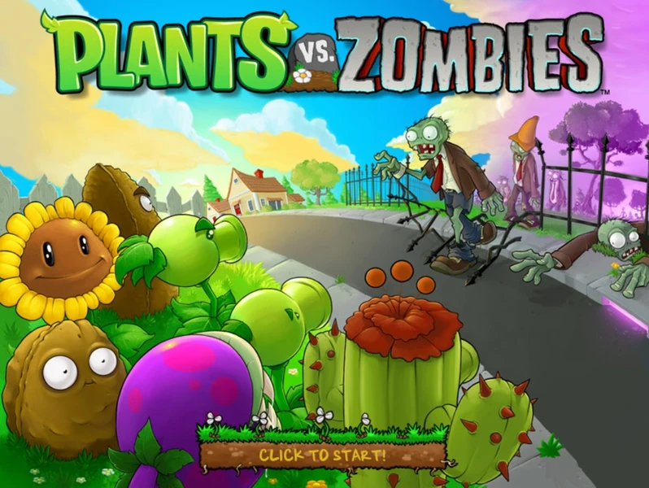

o zumbinho pode usar a sua granada de anti gravidade, isso pode ser utilado quando tiver plantas se escondendo em obestacolos, deixando eles espostos a ataques, só tome cuidado que as plantas consegue bater em você, mesmo na granada de anti gravidade
compre esse, só joge ele bastante, porque pode dar bug de não conseguir mais jogar no mutilplayer, ai jogo vira um lixo, nem da pra se divertir mais, mas eu dou o meu jeito pra se divertir, nem que seja contra NPC
com toda certeza é o pior jogo de FPS, e eu posso provar, primeramente a POPCAP tirou as variantes de todos os personagem jogaveis, e variantes são a alma de plantas vs zumbis, eles tiram todas as variantes pra colocar um sistema de correr, e esse sistema literalmente deixou os ataques imprevisiveis em um cocô, tipo o feijão explosivo da disparer-vilha, no PvZ GW2 você não podia fazer nada se a bomba da disparer-vilha tivese perto de tu, nesse jogo é só você correr e pronto você esta salvo, e isso vale até pros zumbis e outras plantas, o modo historia é legal, e os chefoes támbem, mas mesmo assim esse jogo é muito ruim, os zumbis é muito feio comparado a de PvZ GW2
bem... eu acho que não presiso falar nada né? NÉ? NÃO? bem... PvZ 3 é um LIXOOOOOOOOOOOOOOOOOOOOOOOOOOOOOOOOOOOOOOOOOOOOOOOOOOOOOOOOOOOOOOOOOOOOOOOOOOOOOOOOOOOOOOOOOOOOOOOOOOOOOOOOOOOOOOOOOOOOOOOOOOOOOOOOOOOOOOOOOOOOOOOOOOOOOOOOOOOOOOOOOOOOOOOOOOOOOOOOOOOOOOOOOOOOOOOOOOOOOOOOOOOOOOOOOOOOOOOOOOOOOOOOOOOOOOOOOOOOOOOOOOOOOOOOOOOOOOOOOOOOOOOOOOOOOOOOOOOOOOOOOOOOOOOOOOOOOOOOOOOOOOOOOOOOOOOOOOOOOOOOOOOOOOOOOOOOOOOOOOOOOOOOOOOOOOOOOOOOOOOOOOOOOOOOOOOOOOOOOOOOOOOOOOOOOOOOOOOOOOOOOOOOOOOOOOOOOOOOOOOOOOOOOOOOOOOOOOOOOOOOOOOOOOOOOOOOOOOOOOOOOOOOOOOOOOOOOOOOOOOOOOOOOOOOOOOOOOOOOOOOOOOOOOOOOOOOOOOOOOOOOOOOOOOOOOOOOOOOOOOOOOOOOOOOOOOOOOOOOOOOOOOOOOOOOOOOOOOOOOOOOOOOOOOOOOOOOOOOOOOOOOOOOOOOOOOO [até saiu do site kkkkk]